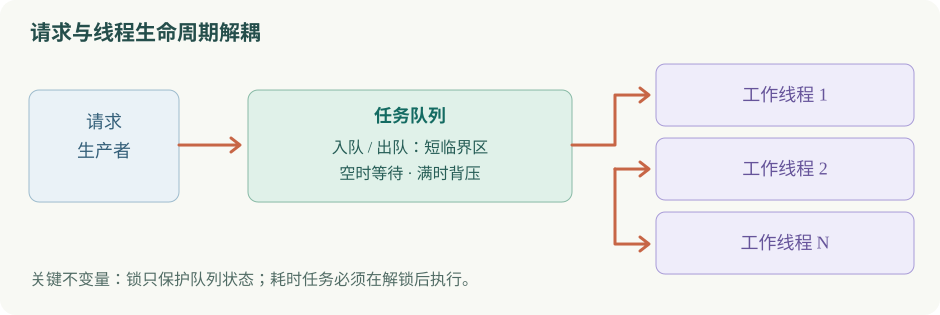
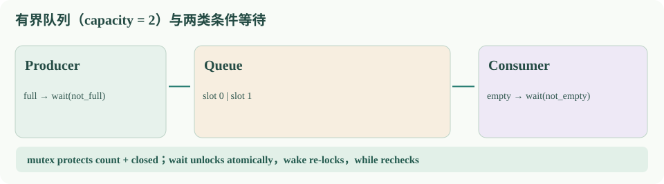

并发编程 · 高阶模式 / 23
更多线程，为什么可能让服务更慢？
在真正的服务里，瓶颈往往不是“线程数量不足”，而是队列无边界、锁覆盖了耗时任务，或者每次请求都新建线程。并发架构的关键，是把共享规则和任务生命周期设计清楚。
使用 POSIX 读写锁和条件变量说明机制；性能依赖负载与实现，不引用未经测量的纳秒数或固定加速比。以下线程池为教学模型，不是完整生产级库。
23.1 读者共享，写者独占：读写锁解决的是访问规则
配置快照可能频繁被读取，偶尔更新。普通互斥锁能保证正确性，但会让两个无冲突的读者也排队。pthread_rwlock_t 提供两种持有方式：读锁可被多个读者同时持有；写锁与所有其他锁请求互斥。
/* 示意：所有读写共享配置的线程都须遵循同一把锁 */
pthread_rwlock_t rw = PTHREAD_RWLOCK_INITIALIZER;
int config_version = 0;
/* 读取路径 */
pthread_rwlock_rdlock(&rw);
int snapshot = config_version;
pthread_rwlock_unlock(&rw);
/* 写入路径 */
pthread_rwlock_wrlock(&rw);
++config_version;
pthread_rwlock_unlock(&rw);使用 rdlock 不意味着读者彼此不再竞争：锁管理本身也有同步开销，频繁写入、短临界区、高争用、缓存行迁移都可能抵消好处。不能把“读多写少就一定用读写锁”当成无条件法则。POSIX 对排队时读写请求的优先级有实现与调度策略相关的规定；代码应避免依赖某种固定的公平性。
wrlock 升级成写锁。”不应这么做：POSIX 不保证这种直接升级安全；通常要释放读锁、再获取写锁，并在新锁下重新验证读取时的假设。23.2 从“一请求一线程”到“有界任务队列”
设想瞬间到来很多短任务。无限创建线程会持续占用栈、调度器和进程资源。线程池不按每个请求新建执行流，而是让固定数量的工作线程反复消费任务。但线程池不只是一组线程，更重要的是受保护的任务队列。

把状态写清楚之后，实现会简单许多：head/tail 决定任务顺序，count 不得超过容量，closed 决定是否继续接单。入队和出队需要在同一互斥锁下维护这些不变量；空队列时工作线程在条件变量上等待。
/* 工作线程主体伪代码：需要预先初始化 queue 和同步原语 */
lock(queue.mu);
while (queue.empty && !queue.closed)
cond_wait(queue.not_empty, queue.mu); /* 原子释放锁并等待 */
if (queue.empty && queue.closed) {
unlock(queue.mu);
return; /* 允许清空剩余任务 */
}
task = queue.pop();
signal(queue.not_full);
unlock(queue.mu);
run(task); /* 一定在锁外 */上段明确是伪代码，而非可直接编译的 C。真正的提交接口还应处理内存分配失败、拒绝已关闭任务、队列满时的等待或拒绝、任务参数所有权，以及回调异常退出后的资源回收。
微型线程池状态机
用“一名工人、最多排队两项任务”的确定性模型推演：任务只在被领取后执行，关闭后不接新任务，但已接任务继续排空。
先提交任务，再领取，注意队列长度和工人状态如何变化。
23.3 关闭不是翻转一个布尔值，而是协议
“优雅停止”至少包含四个决定：什么时候拒绝新任务、已经入队的任务是否执行、正在运行的任务怎样结束、什么时候可以释放队列内存。简单将 shutdown=true 而不让等待的线程醒来，会遗留永久阻塞的工作者。
- 持有锁设置
closed=true，让后续提交失败或返回显式状态。 pthread_cond_broadcast唤醒空队列上等待的所有工作者；关闭条件也是它们需要重检的谓词。- 工作者完成手头任务、排空已接受任务后退出；主线程
pthread_join所有工作者。 - 确认没有提交者还在使用队列，再销毁条件变量、互斥锁及内存。
如果采用“立即取消排队任务”，必须明确谁释放任务及回调数据，且不能把普通线程取消等同于回调安全中断。实际系统常采用背压（有界队列、明确拒绝或阻塞）限制请求增长，而不是无限囤积。
23.4 死锁是循环依赖：先设计顺序，再谈调试
线程 A 持锁 L1 等待 L2，线程 B 持锁 L2 等待 L1；双方都无法向前。经典的 Coffman 四个必要条件是：互斥、持有且等待、不可抢占、循环等待。最易落地的预防规则是全局一致的锁顺序，例如所有代码路径都先获取编号较小的账户锁。
| 观察到的情形 | 可验证的设计措施 |
|---|---|
| 线程互相持有对方所需的锁 | 为锁建立全局次序；封装同时获取两把锁的辅助函数 |
| 持锁调用外部回调或阻塞 I/O | 缩短临界区；拆开状态快照和耗时操作 |
| 尝试获取第二把锁失败 | 在协议允许时释放第一把锁并退避重试；须避免活锁 |
PTHREAD_MUTEX_ERRORCHECK 有助于发现某些同线程误用；它不是一般死锁检测器。对多锁项目而言，记录锁的顺序约束、在代码审查中检查所有路径，比寄希望于运行时工具更可靠。
23.5 先问自己在找什么 Bug，再选工具
ThreadSanitizer 针对冲突共享内存访问及同步问题，可尝试 -fsanitize=thread -g -O1 -fno-omit-frame-pointer -pthread。它需要受支持的平台与运行时，不等于“所有竞态都被证明不存在”；也不能在同一构建中与 AddressSanitizer 组合。
GDB 的 info threads 和 thread apply all bt 可以查看等待栈，但“当前等在哪里”不自动告诉你“谁持有什么锁”。Helgrind 提供另一种动态分析途径；而 perf lock 更偏向可观测的内核锁事件，不能直接当成所有用户态 pthread_mutex 竞争的完整清单。记录可复现输入和锁状态比给工具排“快慢名次”更有价值。
23.6 验证一个最小的读写锁实例
运行仓库中的可执行练习：cc -std=c11 -D_XOPEN_SOURCE=700 -Wall -Wextra -Werror -pedantic -pthread examples/olah-ch23-rwlock.c -o /tmp/ch23 && /tmp/ch23。两个写入者按写锁串行更新，读取者在读锁下获取稳定快照；最终检查值一致后打印 rwlock-ok。示例展示正确性，不宣称更快。
资料与范围
参阅 POSIX pthread_rwlock_rdlock、pthread_cond_wait(3) 与 ThreadSanitizer 使用说明。等待公平性、吞吐量与检测开销均与平台/负载有关。
技术深描 · 23 / CONCURRENCY MODEL
队列已经空了，条件变量到底等待什么？又怎样优雅关闭？

对一个固定容量 capacity=2 的任务队列，定义状态 count（当前排队任务数）、closed（是否拒绝新工作）、enqueued、dequeued（已接纳和已领取的计数）。最核心的不变量是 0 ≤ count ≤ 2 以及 enqueued = dequeued + count。任务从队列取出和任务真正完成不是同一时刻；结束条件要按业务要求确定。
| 参与者 | 在同一 mutex 下检查的条件 | 状态更新与通知 |
|---|---|---|
| 生产者 | while (count==2 && !closed) 等待 not_full | 没关闭才入队；count++；通知 not_empty |
| 消费者 | while (count==0 && !closed) 等待 not_empty | 有任务才出队；count--；通知 not_full |
| 关闭发起者 | 持锁将 closed=true | 广播唤醒两类等待者；已接纳任务可以继续被消费 |
| 消费者退出 | closed && count==0 | 退出循环并让主线程 join |
核心并不在于“通知次数等于任务个数”。pthread_cond_wait 会原子地释放 mutex 并进入等待，唤醒返回前重新获得同一 mutex；因此必须在 while 循环里重新检查共享状态谓词。允许虚假唤醒，也允许别的线程先改变条件；if 只检查一次就继续工作可能越界或消费空队列。通知应该伴随受锁保护的状态更新，而不是单独充当任务计数器。
关闭时，先停止接收新任务，唤醒阻塞的生产者和消费者；工作线程可以在队列清空后退出。工作线程拿到任务之后通常应在锁外执行耗时工作，否则即使配置了很多线程，也会被串成一个全局临界区。
cc -std=c11 -Wall -Wextra -Werror -pedantic -pthread examples/deep-ch19-23.c -o /tmp/deep-io
/tmp/deep-io queue
python3 examples/deep-ch19-23-models.py 23实际 C 程序用一个生产者、一个消费者、两个队列槽、六个确定性任务值，检查累积结果与已处理数；线程的运行次序不固定，断言检查最终状态而不是日志顺序。依据 pthread_cond_wait(3p)、pthread_cond_broadcast(3p)。